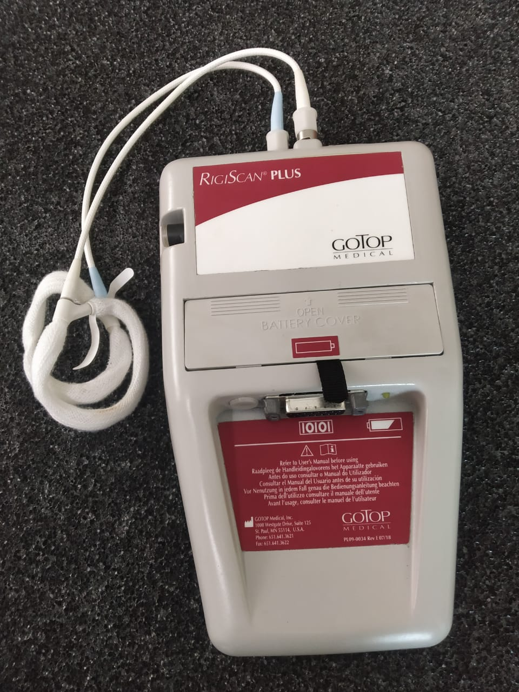
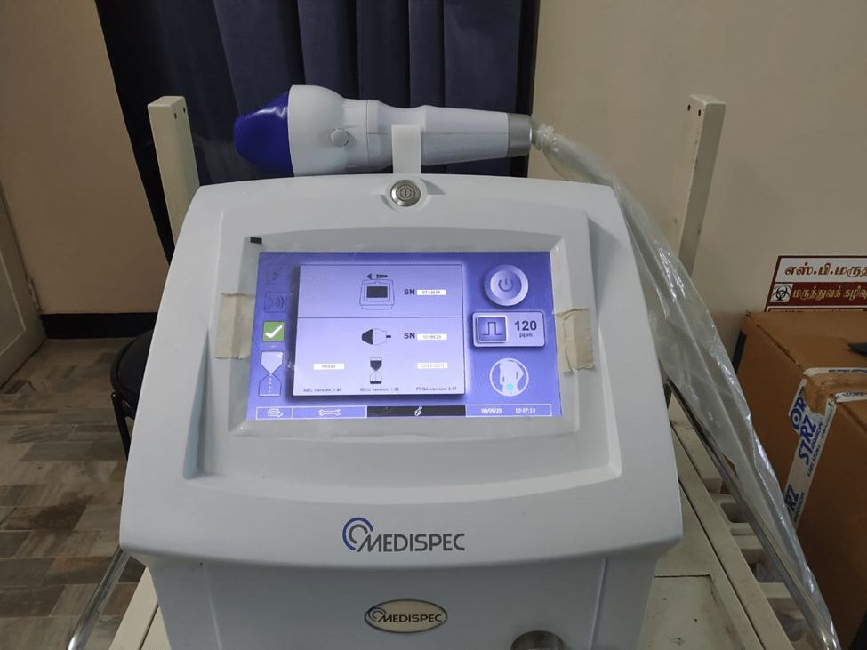

SEXUAL IMPOTENCE
Many men have poor or insufficient erection and have unsatisfactory sexual performance. Some have erection insuffiecient for penetration and ejaculation in to the female tract. They may have managed to have one child and before they have the next child they develop this problem. Some men have had no coitus at all from the time of their marriage. All facilities for the necessary investigations and treatment are available at SB Hospital. Those men with such and any other sexual problem such As loss of libido, premature ejaculation, painful ejaculation etc., require a detailed symptom analysis followed by various blood and hormonal investigations to identify the cause of sexual impotence. A thorough analysis of these reports and based on these investigation the type of treatment is decided. Some require simple counselling or medical treatment with certain drugs. Certain others may require rigidity studies with special equipment followed by intra cavernous injection of chemo active substances to assess the degree of rigidity. The same may be required as a treatment modality followed by oral drugs. In general most patients are treated with good results with these simple methods. In resistant cases of persistent erectile failure, six sittings of Extra Corporeal shock wave therapy is given to promote regeneration of new blood vessels. This results in good blood flow in to the penis blood vessels resulting in sufficiently good rigidity for penetration. Very rarely the erectile failure persists even with these methods’ Penile implantation with semi rigid prosthesis is done. Many patients with severe erectile failure following severe uncontrolled Diabetes with peripheral neuropathy have been benefitted by this treatment at SB Hospital.
RIGI SCAN MEASURING PENILE RIGIDITY

EXTRA CORPOREAL SHOCK WAVE THERAPY FOR ENHANCING PENILE RIGIDITY

PENILE IMPLANTS